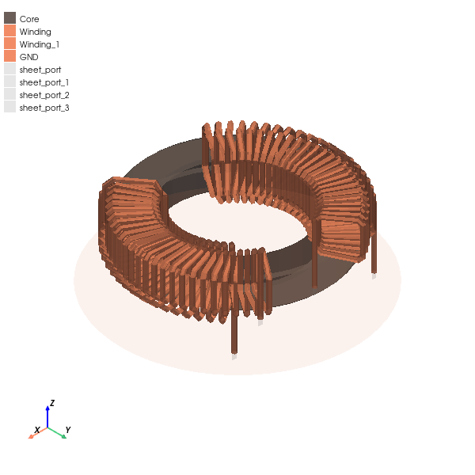

Download this example
Download this example as a Jupyter Notebook or as a Python script.
Choke#
This example shows how to use PyAEDT to create a choke setup in HFSS.
Keywords: HFSS, EMC, choke, .
Perform imports and define constants#
Perform required imports.
[1]:
import json
import os
import tempfile
import time
import ansys.aedt.core
Define constants.
[2]:
AEDT_VERSION = "2025.1"
NG_MODE = False # Open AEDT UI when it is launched.
Create temporary directory#
Create a temporary directory where downloaded data or dumped data can be stored. If you’d like to retrieve the project data for subsequent use, the temporary folder name is given by temp_folder.name.
[3]:
temp_folder = tempfile.TemporaryDirectory(suffix=".ansys")
Launch HFSS#
[4]:
project_name = os.path.join(temp_folder.name, "choke.aedt")
hfss = ansys.aedt.core.Hfss(
project=project_name,
version=AEDT_VERSION,
non_graphical=NG_MODE,
new_desktop=True,
solution_type="Terminal",
)
PyAEDT INFO: Python version 3.10.11 (tags/v3.10.11:7d4cc5a, Apr 5 2023, 00:38:17) [MSC v.1929 64 bit (AMD64)].
PyAEDT INFO: PyAEDT version 0.18.dev0.
PyAEDT INFO: Initializing new Desktop session.
PyAEDT INFO: Log on console is enabled.
PyAEDT INFO: Log on file C:\Users\ansys\AppData\Local\Temp\pyaedt_ansys_c2274af2-c10c-4513-a381-3f66183a083f.log is enabled.
PyAEDT INFO: Log on AEDT is disabled.
PyAEDT INFO: Debug logger is disabled. PyAEDT methods will not be logged.
PyAEDT INFO: Launching PyAEDT with gRPC plugin.
PyAEDT INFO: New AEDT session is starting on gRPC port 50711.
PyAEDT INFO: Electronics Desktop started on gRPC port: 50711 after 5.656430244445801 seconds.
PyAEDT INFO: AEDT installation Path C:\Program Files\ANSYS Inc\v251\AnsysEM
PyAEDT INFO: Ansoft.ElectronicsDesktop.2025.1 version started with process ID 7340.
PyAEDT INFO: Project choke has been created.
PyAEDT INFO: No design is present. Inserting a new design.
PyAEDT INFO: Added design 'HFSS_TH0' of type HFSS.
PyAEDT INFO: Aedt Objects correctly read
Define parameters#
The dictionary values contain the different parameter values of the core and the windings that compose the choke. You must not change the main structure of the dictionary. The dictionary has many primary keys, including "Number of Windings", "Layer", and "Layer Type", that have dictionaries as values. The keys of these dictionaries are secondary keys of the dictionary values, such as "1", "2", "3", "4", and "Simple".
You must not modify the primary or secondary keys. You can modify only their values. You must not change the data types for these keys. For the dictionaries from "Number of Windings" through "Wire Section", values must be Boolean. Only one value per dictionary can be True. If all values are True, only the first one remains set to True. If all values are False, the first value is chosen as the correct one by default. For the dictionaries from "Core" through
"Inner Winding", values must be strings, floats, or integers.
Descriptions follow for the primary keys:
"Number of Windings": Number of windings around the core."Layer": Number of layers of all windings."Layer Type": Whether layers of a winding are linked to each other"Similar Layer": Whether layers of a winding have the same number of turns and same spacing between turns."Mode": When there are only two windows, whether they are in common or differential mode."Wire Section": Type of wire section and number of segments."Core": Design of the core."Outer Winding": Design of the first layer or outer layer of a winding and the common parameters for all layers."Mid Winding": Turns and turns spacing (Coil Pit) for the second or mid layer if it is necessary."Inner Winding": Turns and turns spacing (Coil Pit) for the third or inner layer if it is necessary."Occupation(%)": An informative parameter that is useless to modify.
The following parameter values work. You can modify them if you want.
[5]:
values = {
"Number of Windings": {"1": False, "2": True, "3": False, "4": False},
"Layer": {"Simple": False, "Double": True, "Triple": False},
"Layer Type": {"Separate": False, "Linked": True},
"Similar Layer": {"Similar": False, "Different": True},
"Mode": {"Differential": False, "Common": True},
"Wire Section": {"None": False, "Hexagon": True, "Octagon": False, "Circle": False},
"Core": {
"Name": "Core",
"Material": "ferrite",
"Inner Radius": 20,
"Outer Radius": 30,
"Height": 10,
"Chamfer": 0.8,
},
"Outer Winding": {
"Name": "Winding",
"Material": "copper",
"Inner Radius": 20,
"Outer Radius": 30,
"Height": 10,
"Wire Diameter": 1.5,
"Turns": 20,
"Coil Pit(deg)": 0.1,
"Occupation(%)": 0,
},
"Mid Winding": {"Turns": 25, "Coil Pit(deg)": 0.1, "Occupation(%)": 0},
"Inner Winding": {"Turns": 4, "Coil Pit(deg)": 0.1, "Occupation(%)": 0},
}
Convert dictionary to JSON file#
Convert the dictionary to a JSON file. You must supply the path of the JSON file as an argument.
[6]:
json_path = os.path.join(hfss.working_directory, "choke_example.json")
with open(json_path, "w") as outfile:
json.dump(values, outfile)
Verify parameters of JSON file#
Verify parameters of the JSON file. The check_choke_values() method takes the JSON file path as an argument and does the following:
Checks if the JSON file is correctly written (as explained earlier).
Checks equations on windings parameters to avoid having unintended intersections.
[7]:
dictionary_values = hfss.modeler.check_choke_values(
json_path, create_another_file=False
)
print(dictionary_values)
PyAEDT INFO: Modeler class has been initialized! Elapsed time: 0m 0sec
PyAEDT INFO: Materials class has been initialized! Elapsed time: 0m 0sec
PyAEDT WARNING: Inner Radius of the winding is too high. The maximum value has been set instead.
PyAEDT WARNING: Outer Radius of the winding is too low. The minimum value has been set instead.
PyAEDT WARNING: Height of the winding is too low. The minimum value has been set instead.
PyAEDT WARNING: Winding Pit is too low. The minimum value has been set instead.
PyAEDT WARNING: Winding Pit of the second layer is too low. The minimum value has been set instead.
[True, {'Number of Windings': {'1': False, '2': True, '3': False, '4': False}, 'Layer': {'Simple': False, 'Double': True, 'Triple': False}, 'Layer Type': {'Separate': False, 'Linked': True}, 'Similar Layer': {'Similar': False, 'Different': True}, 'Mode': {'Differential': False, 'Common': True}, 'Wire Section': {'None': False, 'Hexagon': True, 'Octagon': False, 'Circle': False}, 'Core': {'Name': 'Core', 'Material': 'ferrite', 'Inner Radius': 20, 'Outer Radius': 30, 'Height': 10, 'Chamfer': 0.8}, 'Outer Winding': {'Name': 'Winding', 'Material': 'copper', 'Inner Radius': 17.525, 'Outer Radius': 32.475, 'Height': 14.95, 'Wire Diameter': 1.5, 'Turns': 20, 'Coil Pit(deg)': 2.699, 'Occupation(%)': 59.977777777777774}, 'Mid Winding': {'Turns': 25, 'Coil Pit(deg)': 2.466, 'Occupation(%)': 68.50000000000001}, 'Inner Winding': {'Turns': 4, 'Coil Pit(deg)': 0.1, 'Occupation(%)': 0}}]
Create choke#
Create the choke. The Hfss.modeler.create_choke() method takes the JSON file path as an argument.
[8]:
list_object = hfss.modeler.create_choke(json_path)
print(list_object)
core = list_object[1]
first_winding_list = list_object[2]
second_winding_list = list_object[3]
PyAEDT INFO: CHOKE INFO: {'Number of Windings': {'1': False, '2': True, '3': False, '4': False}, 'Layer': {'Simple': False, 'Double': True, 'Triple': False}, 'Layer Type': {'Separate': False, 'Linked': True}, 'Similar Layer': {'Similar': False, 'Different': True}...
PyAEDT INFO: Parsing design objects. This operation can take time
PyAEDT INFO: Refreshing bodies from Object Info
PyAEDT INFO: Bodies Info Refreshed Elapsed time: 0m 0sec
PyAEDT INFO: 3D Modeler objects parsed. Elapsed time: 0m 0sec
PyAEDT INFO: Parsing design objects. This operation can take time
PyAEDT INFO: Refreshing bodies from Object Info
PyAEDT INFO: Bodies Info Refreshed Elapsed time: 0m 0sec
PyAEDT INFO: 3D Modeler objects parsed. Elapsed time: 0m 0sec
PyAEDT INFO: Deleted 20 Objects: Winding,Winding_1,Winding_2,Winding_3,Winding_4,Winding_5,Winding_6,Winding_7,Winding_8,Winding_9,Winding_10,Winding_11,Winding_12,Winding_13,Winding_14,Winding_15,Winding_16,Winding_17,Winding_18,Winding_19.
PyAEDT INFO: Parsing design objects. This operation can take time
PyAEDT INFO: Refreshing bodies from Object Info
PyAEDT INFO: Bodies Info Refreshed Elapsed time: 0m 0sec
PyAEDT INFO: 3D Modeler objects parsed. Elapsed time: 0m 0sec
PyAEDT INFO: Deleted 25 Objects: Winding,Winding_1,Winding_2,Winding_3,Winding_4,Winding_5,Winding_6,Winding_7,Winding_8,Winding_9,Winding_10,Winding_11,Winding_12,Winding_13,Winding_14,Winding_15,Winding_16,Winding_17,Winding_18,Winding_19,Winding_20,Winding_21,...
PyAEDT INFO: Parsing design objects. This operation can take time
PyAEDT INFO: Refreshing bodies from Object Info
PyAEDT INFO: Bodies Info Refreshed Elapsed time: 0m 0sec
PyAEDT INFO: 3D Modeler objects parsed. Elapsed time: 0m 0sec
PyAEDT INFO: Deleted 2 Objects: Winding_1,Winding.
PyAEDT INFO: Creating double linked winding
PyAEDT INFO: Choke created correctly
[True, <ansys.aedt.core.modeler.cad.object_3d.Object3d object at 0x0000019501942F50>, [<ansys.aedt.core.modeler.cad.polylines.Polyline object at 0x000001950196D180>, [[-9.105371275769, 16.875213744732, -14.95], [-9.105371275769, 16.875213744732, 4.541726188958], [-9.714742044896, 18.004575927489, 5.825], [-15.133715602029, 25.37093294107, 5.825], [-15.791114589875, 26.473030144081, 4.541726188958], [-15.791114589875, 26.473030144081, -4.541726188958], [-15.133715602029, 25.37093294107, -5.825], [-11.2266867204, 17.102703663736, -5.825], [-10.522477108869, 16.029912678905, -4.541726188958], [-10.522477108869, 16.029912678905, 4.541726188958], [-11.2266867204, 17.102703663736, 5.825], [-17.258906742015, 23.975898821395, 5.825], [-18.008622682363, 25.017396628832, 4.541726188958], [-18.008622682363, 25.017396628832, -4.541726188958], [-17.258906742015, 23.975898821395, -5.825], [-12.655496321042, 16.074183655653, -5.825], [-11.861662630843, 15.065908025475, -4.541726188958], [-11.861662630843, 15.065908025475, 4.541726188958], [-12.655496321042, 16.074183655653, 5.825], [-19.256293433567, 22.403320053593, 5.825], [-20.0927745824, 23.376506038775, 4.541726188958], [-20.0927745824, 23.376506038775, -4.541726188958], [-19.256293433567, 22.403320053593, -5.825], [-13.990590325955, 14.926632227628, -5.825], [-13.113010998777, 13.990338364241, -4.541726188958], [-13.113010998777, 13.990338364241, 4.541726188958], [-13.990590325955, 14.926632227628, 5.825], [-21.111084768533, 20.664841787906, 5.825], [-22.028136874184, 21.562509382079, 4.541726188958], [-22.028136874184, 21.562509382079, -4.541726188958], [-21.111084768533, 20.664841787906, -5.825], [-15.222082190442, 13.668547147192, -5.825], [-14.267255815306, 12.811168428391, -4.541726188958], [-14.267255815306, 12.811168428391, 4.541726188958], [-15.222082190442, 13.668547147192, 5.825], [-22.809545775916, 18.773337681929, 5.825], [-23.800377948308, 19.588839539842, 4.541726188958], [-23.800377948308, 19.588839539842, -4.541726188958], [-22.809545775916, 18.773337681929, -5.825], [-16.340852557127, 12.309244697941, -5.825], [-15.315849747489, 11.537130124616, -4.541726188958], [-15.315849747489, 11.537130124616, 4.541726188958], [-16.340852557127, 12.309244697941, 5.825], [-24.339099131124, 16.742814569501, 5.825], [-25.396374129191, 17.470111793866, 4.541726188958], [-25.396374129191, 17.470111793866, -4.541726188958], [-24.339099131124, 16.742814569501, -5.825], [-17.338616785984, 10.85879069125, -5.825], [-16.25102782092, 10.177657872206, -4.541726188958], [-16.25102782092, 10.177657872206, 4.541726188958], [-17.338616785984, 10.85879069125, 5.825], [-25.688418292686, 14.588308738278, 5.825], [-26.804306857601, 15.222015598585, 4.541726188958], [-26.804306857601, 15.222015598585, -4.541726188958], [-25.688418292686, 14.588308738278, -5.825], [-18.207986303167, 9.327925927625, -5.825], [-17.065864920372, 8.74281873995, -4.541726188958], [-17.065864920372, 8.74281873995, 4.541726188958], [-18.207986303167, 9.327925927625, 5.825], [-26.847511376774, 12.325774584072, 5.825], [-28.013750208625, 12.861198398624, 4.541726188958], [-28.013750208625, 12.861198398624, -4.541726188958], [-26.847511376774, 12.325774584072, -5.825], [-18.942523314366, 7.727986659686, -5.825], [-17.754327071178, 7.24323789818, -4.541726188958], [-17.754327071178, 7.24323789818, 4.541726188958], [-18.942523314366, 7.727986659686, 5.825], [-27.807795148393, 9.971966466468, 5.825], [-29.015748096995, 10.405142352304, 4.541726188958], [-29.015748096995, 10.405142352304, -4.541726188958], [-27.807795148393, 9.971966466468, -5.825], [-19.536788477508, 6.070820645736, -5.825], [-18.311316121598, 5.690019938005, -4.541726188958], [-18.311316121598, 5.690019938005, 4.541726188958], [-19.536788477508, 6.070820645736, 5.825], [-28.562158581358, 7.544314640622, 5.825], [-29.802880598069, 7.872034873984, 4.541726188958], [-29.802880598069, 7.872034873984, -4.541726188958], [-28.562158581358, 7.544314640622, -5.825], [-19.986381181793, 4.368699415575, -5.825], [-18.732707495294, 4.094666640371, -4.541726188958], [-18.732707495294, 4.094666640371, 4.541726188958], [-19.986381181793, 4.368699415575, 5.825], [-29.105015516366, 5.060796183947, 5.825], [-30.369318893333, 5.280633953898, 4.541726188958], [-30.369318893333, 5.280633953898, -4.541726188958], [-29.105015516366, 5.060796183947, -5.825], [-20.287972134791, 2.634227398221, -5.825], [-19.015380734353, 2.468991803874, -4.541726188958], [-19.015380734353, 2.468991803874, 4.541726188958], [-20.287972134791, 2.634227398221, 5.825], [-29.43234602723, 2.539801873523, 5.825], [-30.710868433561, 2.650129252793, 4.541726188958], [-30.710868433561, 2.650129252793, -4.541726188958], [-29.43234602723, 2.539801873523, -5.825], [-20.43932801628, 0.88024858448, -5.825], [-19.157242606687, 0.825033762051, -4.541726188958], [-19.157242606687, 0.825033762051, 4.541726188958], [-20.43932801628, 0.88024858448, 5.825], [-29.541726188958, 0.0, 5.825], [-30.825, 0.0, 4.541726188958], [-30.825, 0.0, -4.541726188958], [-29.541726188958, 0.0, -5.825], [-20.43932801628, -0.88024858448, -5.825], [-19.157242606687, -0.825033762051, -4.541726188958], [-19.157242606687, -0.825033762051, 4.541726188958], [-20.43932801628, -0.88024858448, 5.825], [-29.43234602723, -2.539801873523, 5.825], [-30.710868433561, -2.650129252793, 4.541726188958], [-30.710868433561, -2.650129252793, -4.541726188958], [-29.43234602723, -2.539801873523, -5.825], [-20.287972134791, -2.634227398221, -5.825], [-19.015380734353, -2.468991803874, -4.541726188958], [-19.015380734353, -2.468991803874, 4.541726188958], [-20.287972134791, -2.634227398221, 5.825], [-29.105015516366, -5.060796183947, 5.825], [-30.369318893333, -5.280633953898, 4.541726188958], [-30.369318893333, -5.280633953898, -4.541726188958], [-29.105015516366, -5.060796183947, -5.825], [-19.986381181793, -4.368699415575, -5.825], [-18.732707495294, -4.094666640371, -4.541726188958], [-18.732707495294, -4.094666640371, 4.541726188958], [-19.986381181793, -4.368699415575, 5.825], [-28.562158581358, -7.544314640622, 5.825], [-29.802880598069, -7.872034873984, 4.541726188958], [-29.802880598069, -7.872034873984, -4.541726188958], [-28.562158581358, -7.544314640622, -5.825], [-19.536788477508, -6.070820645736, -5.825], [-18.311316121598, -5.690019938005, -4.541726188958], [-18.311316121598, -5.690019938005, 4.541726188958], [-19.536788477508, -6.070820645736, 5.825], [-27.807795148393, -9.971966466468, 5.825], [-29.015748096995, -10.405142352304, 4.541726188958], [-29.015748096995, -10.405142352304, -4.541726188958], [-27.807795148393, -9.971966466468, -5.825], [-18.942523314366, -7.727986659686, -5.825], [-17.754327071178, -7.24323789818, -4.541726188958], [-17.754327071178, -7.24323789818, 4.541726188958], [-18.942523314366, -7.727986659686, 5.825], [-26.847511376774, -12.325774584072, 5.825], [-28.013750208625, -12.861198398624, 4.541726188958], [-28.013750208625, -12.861198398624, -4.541726188958], [-26.847511376774, -12.325774584072, -5.825], [-18.207986303167, -9.327925927625, -5.825], [-17.065864920372, -8.74281873995, -4.541726188958], [-17.065864920372, -8.74281873995, 4.541726188958], [-18.207986303167, -9.327925927625, 5.825], [-25.688418292686, -14.588308738278, 5.825], [-26.804306857601, -15.222015598585, 4.541726188958], [-26.804306857601, -15.222015598585, -4.541726188958], [-25.688418292686, -14.588308738278, -5.825], [-17.338616785984, -10.858790691249, -5.825], [-16.25102782092, -10.177657872206, -4.541726188958], [-16.25102782092, -10.177657872206, 4.541726188958], [-17.338616785984, -10.85879069125, 5.825], [-24.339099131124, -16.742814569501, 5.825], [-25.396374129191, -17.470111793866, 4.541726188958], [-25.396374129191, -17.470111793866, -4.541726188958], [-24.339099131124, -16.742814569501, -5.825], [-16.340852557127, -12.309244697941, -5.825], [-15.315849747489, -11.537130124616, -4.541726188958], [-15.315849747489, -11.537130124616, 4.541726188958], [-16.340852557127, -12.309244697941, 5.825], [-22.809545775916, -18.773337681929, 5.825], [-23.800377948308, -19.588839539842, 4.541726188958], [-23.800377948308, -19.588839539842, -4.541726188958], [-22.809545775916, -18.773337681929, -5.825], [-15.222082190442, -13.668547147192, -5.825], [-14.267255815306, -12.811168428391, -4.541726188958], [-14.267255815306, -12.811168428391, 4.541726188958], [-15.222082190442, -13.668547147192, 5.825], [-21.111084768533, -20.664841787906, 5.825], [-22.028136874184, -21.562509382079, 4.541726188958], [-22.028136874184, -21.562509382079, -4.541726188958], [-21.111084768533, -20.664841787906, -5.825], [-13.990590325955, -14.926632227628, -5.825], [-13.113010998777, -13.990338364241, -4.541726188958], [-13.113010998777, -13.990338364241, 4.541726188958], [-13.990590325955, -14.926632227628, 5.825], [-19.256293433567, -22.403320053593, 5.825], [-20.0927745824, -23.376506038775, 4.541726188958], [-20.0927745824, -23.376506038775, -4.541726188958], [-19.256293433567, -22.403320053593, -5.825], [-12.655496321042, -16.074183655653, -5.825], [-11.861662630843, -15.065908025475, -4.541726188958], [-11.861662630843, -15.065908025475, 4.541726188958], [-12.655496321042, -16.074183655653, 5.825], [-17.258906742015, -23.975898821395, 5.825], [-18.008622682363, -25.017396628832, 4.541726188958], [-18.008622682363, -25.017396628832, -4.541726188958], [-17.258906742015, -23.975898821395, -5.825], [-11.2266867204, -17.102703663736, -5.825], [-10.522477108869, -16.029912678905, -4.541726188958], [-10.522477108869, -16.029912678905, 4.541726188958], [-11.2266867204, -17.102703663736, 5.825], [-15.133715602029, -25.37093294107, 5.825], [-15.791114589875, -26.473030144081, 4.541726188958], [-15.791114589875, -26.473030144081, -4.541726188958], [-15.133715602029, -25.37093294107, -5.825], [-9.714742044896, -18.004575927489, -5.825], [-9.105371275769, -16.875213744732, -4.541726188958], [-9.105371275769, -16.875213744732, 5.225178566873], [-9.714742044896, -18.004575927489, 7.475], [-15.589268932331, -25.89471207708, 7.475], [-16.749661460472, -27.822193766121, 5.225178566873], [-16.749661460472, -27.822193766121, -5.225178566873], [-15.589268932331, -25.89471207708, -7.475], [-10.985728205065, -16.442546594627, -7.475], [-9.73585968626, -14.571844810094, -5.225178566873], [-9.73585968626, -14.571844810094, 5.225178566873], [-10.985728205065, -16.442546594627, 7.475], [-17.956142197799, -24.313337425615, 7.475], [-19.292713741404, -26.123108955334, 5.225178566873], [-19.292713741404, -26.123108955334, -5.225178566873], [-17.956142197799, -24.313337425615, -7.475], [-12.483818155695, -15.336161415673, -7.475], [-11.063508913009, -13.591335310843, -5.225178566873], [-11.063508913009, -13.591335310843, 5.225178566873], [-12.483818155695, -15.336161415673, 7.475], [-20.163753424001, -22.516315579052, 7.475], [-21.664649259082, -24.192325177232, 5.225178566873], [-21.664649259082, -24.192325177232, -5.225178566873], [-20.163753424001, -22.516315579052, -7.475], [-13.871182856134, -14.093752122261, -7.475], [-12.293030325246, -12.490277435773, -5.225178566873], [-12.293030325246, -12.490277435773, 5.225178566873], [-13.871182856134, -14.093752122261, 7.475], [-22.192522198737, -20.519585226265, 7.475], [-23.844430126671, -22.046967522412, 5.225178566873], [-23.844430126671, -22.046967522412, -5.225178566873], [-22.192522198737, -20.519585226265, -7.475], [-15.135517072389, -12.72633826611, -7.475], [-13.413518680339, -11.278437019915, -5.225178566873], [-13.413518680339, -11.278437019915, 5.225178566873], [-15.135517072389, -12.72633826611, 7.475], [-24.024454353285, -18.340856371127, 7.475], [-25.812722773391, -19.706064244899, 5.225178566873], [-25.812722773391, -19.706064244899, -5.225178566873], [-24.024454353285, -18.340856371127, -7.475], [-16.26560678959, -11.246048127164, -7.475], [-14.415035804573, -9.96656248427, -5.225178566873], [-14.415035804573, -9.96656248427, 5.225178566873], [-16.26560678959, -11.246048127164, 7.475], [-25.643301561725, -15.999453253591, 7.475], [-27.55206942366, -17.190377991011, 5.225178566873], [-27.55206942366, -17.190377991011, -5.225178566873], [-25.643301561725, -15.999453253591, -7.475], [-17.251428674722, -9.66601114178, -7.475], [-15.288698739805, -8.566289502667, -5.225178566873], [-15.288698739805, -8.566289502667, 5.225178566873], [-17.251428674722, -9.66601114178, 7.475], [-27.034705455491, -13.516142953307, 7.475], [-29.047042938873, -14.522221645027, 5.225178566873], [-29.047042938873, -14.522221645027, -5.225178566873], [-27.034705455491, -13.516142953307, -7.475], [-18.084238978596, -8.000241451173, -7.475], [-16.026758530875, -7.090037799125, -5.225178566873], [-16.026758530875, -7.090037799125, 5.225178566873], [-18.084238978596, -8.000241451173, 7.475], [-28.186324974955, -10.91295119597, 7.475], [-30.284383648435, -11.725260425013, 5.225178566873], [-30.284383648435, -11.725260425013, -5.225178566873], [-28.186324974955, -10.91295119597, -7.475], [-18.756651088551, -6.263513602956, -7.475], [-16.622668954987, -5.550900991092, -5.225178566873], [-16.622668954987, -5.550900991092, 5.225178566873], [-18.756651088551, -6.263513602956, 7.475], [-29.087945828478, -8.212966996095, 7.475], [-31.253116956441, -8.824301984124, 5.225178566873], [-31.253116956441, -8.824301984124, -5.225178566873], [-29.087945828478, -8.212966996095, -7.475], [-19.262701044026, -4.471231508266, -7.475], [-17.071144583437, -3.962530455577, -5.225178566873], [-17.071144583437, -3.962530455577, 5.225178566873], [-19.262701044026, -4.471231508266, 7.475], [-29.731571088089, -5.440137868962, 7.475], [-31.94465068087, -5.845076379075, 5.225178566873], [-31.94465068087, -5.845076379075, -5.225178566873], [-29.731571088089, -5.440137868962, -7.475], [-19.597900433928, -2.639291816738, -7.475], [-17.368207660739, -2.339014248233, -5.225178566873], [-17.368207660739, -2.339014248233, 5.225178566873], [-19.597900433928, -2.639291816738, 7.475], [-30.111492118256, -2.619057428082, 7.475], [-32.352851261964, -2.814007857349, 5.225178566873], [-32.352851261964, -2.814007857349, -5.225178566873], [-30.111492118256, -2.619057428082, -7.475], [-19.759276206593, -0.783942921144, -7.475], [-17.511223385333, -0.694752149319, -5.225178566873], [-17.511223385333, -0.694752149319, 5.225178566873], [-19.759276206593, -0.783942921144, 7.475], [-30.22433920864, 0.225252747914, 7.475], [-32.474098163852, 0.242019512716, 5.225178566873], [-32.474098163852, 0.242019512716, -5.225178566873], [-30.22433920864, 0.225252747914, -7.475], [-19.745397039283, 1.078359157762, -7.475], [-17.498923278961, 0.955672055178, -5.225178566873], [-17.498923278961, 0.955672055178, 5.225178566873], [-19.745397039283, 1.078359157762, 7.475], [-30.069111461746, 3.06756504421, 7.475], [-32.307315986892, 3.295900290227, 5.225178566873], [-32.307315986892, 3.295900290227, -5.225178566873], [-30.069111461746, 3.06756504421, -7.475], [-19.556386033299, 2.931096727954, -7.475], [-17.331416437442, 2.597619924464, -5.225178566873], [-17.331416437442, 2.597619924464, 5.225178566873], [-19.556386033299, 2.931096727954, 7.475], [-29.647185670387, 5.882669566189, 7.475], [-31.853984005939, 6.320548073498, 5.225178566873], [-31.853984005939, 6.320548073498, -5.225178566873], [-29.647185670387, 5.882669566189, -7.475], [-19.193919622139, 4.757836929835, -7.475], [-17.010188563043, 4.216528198615, -5.225178566873], [-17.010188563043, 4.216528198615, 5.225178566873], [-19.193919622139, 4.757836929835, 7.475], [-28.962304106216, 8.645597738643, 7.475], [-31.118123049907, 9.289135742945, 5.225178566873], [-31.118123049907, 9.289135742945, -5.225178566873], [-28.962304106216, 8.645597738643, -7.475], [-18.661212702364, 6.542377487516, -7.475], [-16.538088787041, 5.798037967445, -5.225178566873], [-16.538088787041, 5.798037967445, 5.225178566873], [-18.661212702364, 6.542377487516, 7.475], [-28.020541327642, 11.3318437646, 7.475], [-30.106259839023, 12.175333404274, 5.225178566873], [-30.106259839023, 12.175333404274, -5.225178566873], [-28.020541327642, 11.3318437646, -7.475], [-17.962990119069, 8.268890414939, -7.475], [-15.919304399347, 7.328122026885, -5.225178566873], [-15.919304399347, 7.328122026885, 5.225178566873], [-17.962990119069, 8.268890414939, 7.475], [-26.830250301518, 13.917581979542, 7.475], [-28.827369096067, 14.953541921535, 5.225178566873], [-28.827369096067, 14.953541921535, -5.225178566873], [-26.830250301518, 13.917581979542, -7.475], [-17.105444758857, 9.92206240223, -7.475], [-15.15932370933, 8.793209293298, -5.225178566873], [-15.15932370933, 8.793209293298, 5.225178566873], [-17.105444758857, 9.92206240223, 7.475], [-25.401988316491, 16.379878173181, 7.475], [-27.292793945051, 17.599119968709, 5.225178566873], [-27.292793945051, 17.599119968709, -5.225178566873], [-25.401988316491, 16.379878173181, -7.475], [-16.096182622021, 11.487230637129, -7.475], [-14.264887367244, 10.180305172235, -5.225178566873], [-14.264887367244, 10.180305172235, 5.225178566873], [-16.096182622021, 11.487230637129, 7.475], [-23.748423345103, 18.696893004485, 7.475], [-25.516145303356, 20.088602585994, 5.225178566873], [-25.516145303356, 20.088602585994, -5.225178566873], [-23.748423345103, 18.696893004485, -7.475], [-14.944155361111, 12.950512856834, -7.475], [-13.243928578022, 11.477106814012, -5.225178566873], [-13.243928578022, 11.477106814012, 5.225178566873], [-14.944155361111, 12.950512856834, 7.475], [-21.884221685188, 20.848075705756, 7.475], [-23.513181159677, 22.399909302321, 5.225178566873], [-23.513181159677, 22.399909302321, -5.225178566873], [-23.513181159677, 22.399909302321, -14.95]]], [<ansys.aedt.core.modeler.cad.polylines.Polyline object at 0x000001950196CB20>, [[9.105371275769, 16.875213744732, -14.95], [9.105371275769, 16.875213744732, 4.541726188958], [9.714742044896, 18.004575927489, 5.825], [15.133715602029, 25.37093294107, 5.825], [15.791114589875, 26.473030144081, 4.541726188958], [15.791114589875, 26.473030144081, -4.541726188958], [15.133715602029, 25.37093294107, -5.825], [11.2266867204, 17.102703663736, -5.825], [10.522477108869, 16.029912678905, -4.541726188958], [10.522477108869, 16.029912678905, 4.541726188958], [11.2266867204, 17.102703663736, 5.825], [17.258906742015, 23.975898821395, 5.825], [18.008622682363, 25.017396628832, 4.541726188958], [18.008622682363, 25.017396628832, -4.541726188958], [17.258906742015, 23.975898821395, -5.825], [12.655496321042, 16.074183655653, -5.825], [11.861662630843, 15.065908025475, -4.541726188958], [11.861662630843, 15.065908025475, 4.541726188958], [12.655496321042, 16.074183655653, 5.825], [19.256293433567, 22.403320053593, 5.825], [20.0927745824, 23.376506038775, 4.541726188958], [20.0927745824, 23.376506038775, -4.541726188958], [19.256293433567, 22.403320053593, -5.825], [13.990590325955, 14.926632227628, -5.825], [13.113010998777, 13.990338364241, -4.541726188958], [13.113010998777, 13.990338364241, 4.541726188958], [13.990590325955, 14.926632227628, 5.825], [21.111084768533, 20.664841787906, 5.825], [22.028136874184, 21.562509382079, 4.541726188958], [22.028136874184, 21.562509382079, -4.541726188958], [21.111084768533, 20.664841787906, -5.825], [15.222082190442, 13.668547147192, -5.825], [14.267255815306, 12.811168428391, -4.541726188958], [14.267255815306, 12.811168428391, 4.541726188958], [15.222082190442, 13.668547147192, 5.825], [22.809545775916, 18.773337681929, 5.825], [23.800377948308, 19.588839539842, 4.541726188958], [23.800377948308, 19.588839539842, -4.541726188958], [22.809545775916, 18.773337681929, -5.825], [16.340852557127, 12.309244697941, -5.825], [15.315849747489, 11.537130124616, -4.541726188958], [15.315849747489, 11.537130124616, 4.541726188958], [16.340852557127, 12.309244697941, 5.825], [24.339099131124, 16.742814569501, 5.825], [25.396374129191, 17.470111793866, 4.541726188958], [25.396374129191, 17.470111793866, -4.541726188958], [24.339099131124, 16.742814569501, -5.825], [17.338616785984, 10.85879069125, -5.825], [16.25102782092, 10.177657872206, -4.541726188958], [16.25102782092, 10.177657872206, 4.541726188958], [17.338616785984, 10.85879069125, 5.825], [25.688418292686, 14.588308738278, 5.825], [26.804306857601, 15.222015598585, 4.541726188958], [26.804306857601, 15.222015598585, -4.541726188958], [25.688418292686, 14.588308738278, -5.825], [18.207986303167, 9.327925927625, -5.825], [17.065864920372, 8.74281873995, -4.541726188958], [17.065864920372, 8.74281873995, 4.541726188958], [18.207986303167, 9.327925927625, 5.825], [26.847511376774, 12.325774584072, 5.825], [28.013750208625, 12.861198398624, 4.541726188958], [28.013750208625, 12.861198398624, -4.541726188958], [26.847511376774, 12.325774584072, -5.825], [18.942523314366, 7.727986659686, -5.825], [17.754327071178, 7.24323789818, -4.541726188958], [17.754327071178, 7.24323789818, 4.541726188958], [18.942523314366, 7.727986659686, 5.825], [27.807795148393, 9.971966466468, 5.825], [29.015748096995, 10.405142352304, 4.541726188958], [29.015748096995, 10.405142352304, -4.541726188958], [27.807795148393, 9.971966466468, -5.825], [19.536788477508, 6.070820645736, -5.825], [18.311316121598, 5.690019938005, -4.541726188958], [18.311316121598, 5.690019938005, 4.541726188958], [19.536788477508, 6.070820645736, 5.825], [28.562158581358, 7.544314640622, 5.825], [29.802880598069, 7.872034873984, 4.541726188958], [29.802880598069, 7.872034873984, -4.541726188958], [28.562158581358, 7.544314640622, -5.825], [19.986381181793, 4.368699415575, -5.825], [18.732707495294, 4.094666640371, -4.541726188958], [18.732707495294, 4.094666640371, 4.541726188958], [19.986381181793, 4.368699415575, 5.825], [29.105015516366, 5.060796183947, 5.825], [30.369318893333, 5.280633953898, 4.541726188958], [30.369318893333, 5.280633953898, -4.541726188958], [29.105015516366, 5.060796183947, -5.825], [20.287972134791, 2.634227398221, -5.825], [19.015380734353, 2.468991803874, -4.541726188958], [19.015380734353, 2.468991803874, 4.541726188958], [20.287972134791, 2.634227398221, 5.825], [29.43234602723, 2.539801873523, 5.825], [30.710868433561, 2.650129252793, 4.541726188958], [30.710868433561, 2.650129252793, -4.541726188958], [29.43234602723, 2.539801873523, -5.825], [20.43932801628, 0.88024858448, -5.825], [19.157242606687, 0.825033762051, -4.541726188958], [19.157242606687, 0.825033762051, 4.541726188958], [20.43932801628, 0.88024858448, 5.825], [29.541726188958, 0.0, 5.825], [30.825, 0.0, 4.541726188958], [30.825, 0.0, -4.541726188958], [29.541726188958, 0.0, -5.825], [20.43932801628, -0.88024858448, -5.825], [19.157242606687, -0.825033762051, -4.541726188958], [19.157242606687, -0.825033762051, 4.541726188958], [20.43932801628, -0.88024858448, 5.825], [29.43234602723, -2.539801873523, 5.825], [30.710868433561, -2.650129252793, 4.541726188958], [30.710868433561, -2.650129252793, -4.541726188958], [29.43234602723, -2.539801873523, -5.825], [20.287972134791, -2.634227398221, -5.825], [19.015380734353, -2.468991803874, -4.541726188958], [19.015380734353, -2.468991803874, 4.541726188958], [20.287972134791, -2.634227398221, 5.825], [29.105015516366, -5.060796183947, 5.825], [30.369318893333, -5.280633953898, 4.541726188958], [30.369318893333, -5.280633953898, -4.541726188958], [29.105015516366, -5.060796183947, -5.825], [19.986381181793, -4.368699415575, -5.825], [18.732707495294, -4.094666640371, -4.541726188958], [18.732707495294, -4.094666640371, 4.541726188958], [19.986381181793, -4.368699415575, 5.825], [28.562158581358, -7.544314640622, 5.825], [29.802880598069, -7.872034873984, 4.541726188958], [29.802880598069, -7.872034873984, -4.541726188958], [28.562158581358, -7.544314640622, -5.825], [19.536788477508, -6.070820645736, -5.825], [18.311316121598, -5.690019938005, -4.541726188958], [18.311316121598, -5.690019938005, 4.541726188958], [19.536788477508, -6.070820645736, 5.825], [27.807795148393, -9.971966466468, 5.825], [29.015748096995, -10.405142352304, 4.541726188958], [29.015748096995, -10.405142352304, -4.541726188958], [27.807795148393, -9.971966466468, -5.825], [18.942523314366, -7.727986659686, -5.825], [17.754327071178, -7.24323789818, -4.541726188958], [17.754327071178, -7.24323789818, 4.541726188958], [18.942523314366, -7.727986659686, 5.825], [26.847511376774, -12.325774584072, 5.825], [28.013750208625, -12.861198398624, 4.541726188958], [28.013750208625, -12.861198398624, -4.541726188958], [26.847511376774, -12.325774584072, -5.825], [18.207986303167, -9.327925927625, -5.825], [17.065864920372, -8.74281873995, -4.541726188958], [17.065864920372, -8.74281873995, 4.541726188958], [18.207986303167, -9.327925927625, 5.825], [25.688418292686, -14.588308738278, 5.825], [26.804306857601, -15.222015598585, 4.541726188958], [26.804306857601, -15.222015598585, -4.541726188958], [25.688418292686, -14.588308738278, -5.825], [17.338616785984, -10.858790691249, -5.825], [16.25102782092, -10.177657872206, -4.541726188958], [16.25102782092, -10.177657872206, 4.541726188958], [17.338616785984, -10.85879069125, 5.825], [24.339099131124, -16.742814569501, 5.825], [25.396374129191, -17.470111793866, 4.541726188958], [25.396374129191, -17.470111793866, -4.541726188958], [24.339099131124, -16.742814569501, -5.825], [16.340852557127, -12.309244697941, -5.825], [15.315849747489, -11.537130124616, -4.541726188958], [15.315849747489, -11.537130124616, 4.541726188958], [16.340852557127, -12.309244697941, 5.825], [22.809545775916, -18.773337681929, 5.825], [23.800377948308, -19.588839539842, 4.541726188958], [23.800377948308, -19.588839539842, -4.541726188958], [22.809545775916, -18.773337681929, -5.825], [15.222082190442, -13.668547147192, -5.825], [14.267255815306, -12.811168428391, -4.541726188958], [14.267255815306, -12.811168428391, 4.541726188958], [15.222082190442, -13.668547147192, 5.825], [21.111084768533, -20.664841787906, 5.825], [22.028136874184, -21.562509382079, 4.541726188958], [22.028136874184, -21.562509382079, -4.541726188958], [21.111084768533, -20.664841787906, -5.825], [13.990590325955, -14.926632227628, -5.825], [13.113010998777, -13.990338364241, -4.541726188958], [13.113010998777, -13.990338364241, 4.541726188958], [13.990590325955, -14.926632227628, 5.825], [19.256293433567, -22.403320053593, 5.825], [20.0927745824, -23.376506038775, 4.541726188958], [20.0927745824, -23.376506038775, -4.541726188958], [19.256293433567, -22.403320053593, -5.825], [12.655496321042, -16.074183655653, -5.825], [11.861662630843, -15.065908025475, -4.541726188958], [11.861662630843, -15.065908025475, 4.541726188958], [12.655496321042, -16.074183655653, 5.825], [17.258906742015, -23.975898821395, 5.825], [18.008622682363, -25.017396628832, 4.541726188958], [18.008622682363, -25.017396628832, -4.541726188958], [17.258906742015, -23.975898821395, -5.825], [11.2266867204, -17.102703663736, -5.825], [10.522477108869, -16.029912678905, -4.541726188958], [10.522477108869, -16.029912678905, 4.541726188958], [11.2266867204, -17.102703663736, 5.825], [15.133715602029, -25.37093294107, 5.825], [15.791114589875, -26.473030144081, 4.541726188958], [15.791114589875, -26.473030144081, -4.541726188958], [15.133715602029, -25.37093294107, -5.825], [9.714742044896, -18.004575927489, -5.825], [9.105371275769, -16.875213744732, -4.541726188958], [9.105371275769, -16.875213744732, 5.225178566873], [9.714742044896, -18.004575927489, 7.475], [15.589268932331, -25.89471207708, 7.475], [16.749661460472, -27.822193766121, 5.225178566873], [16.749661460472, -27.822193766121, -5.225178566873], [15.589268932331, -25.89471207708, -7.475], [10.985728205065, -16.442546594627, -7.475], [9.73585968626, -14.571844810094, -5.225178566873], [9.73585968626, -14.571844810094, 5.225178566873], [10.985728205065, -16.442546594627, 7.475], [17.956142197799, -24.313337425615, 7.475], [19.292713741404, -26.123108955334, 5.225178566873], [19.292713741404, -26.123108955334, -5.225178566873], [17.956142197799, -24.313337425615, -7.475], [12.483818155695, -15.336161415673, -7.475], [11.063508913009, -13.591335310843, -5.225178566873], [11.063508913009, -13.591335310843, 5.225178566873], [12.483818155695, -15.336161415673, 7.475], [20.163753424001, -22.516315579052, 7.475], [21.664649259082, -24.192325177232, 5.225178566873], [21.664649259082, -24.192325177232, -5.225178566873], [20.163753424001, -22.516315579052, -7.475], [13.871182856134, -14.093752122261, -7.475], [12.293030325246, -12.490277435773, -5.225178566873], [12.293030325246, -12.490277435773, 5.225178566873], [13.871182856134, -14.093752122261, 7.475], [22.192522198737, -20.519585226265, 7.475], [23.844430126671, -22.046967522412, 5.225178566873], [23.844430126671, -22.046967522412, -5.225178566873], [22.192522198737, -20.519585226265, -7.475], [15.135517072389, -12.72633826611, -7.475], [13.413518680339, -11.278437019915, -5.225178566873], [13.413518680339, -11.278437019915, 5.225178566873], [15.135517072389, -12.72633826611, 7.475], [24.024454353285, -18.340856371127, 7.475], [25.812722773391, -19.706064244899, 5.225178566873], [25.812722773391, -19.706064244899, -5.225178566873], [24.024454353285, -18.340856371127, -7.475], [16.26560678959, -11.246048127164, -7.475], [14.415035804573, -9.96656248427, -5.225178566873], [14.415035804573, -9.96656248427, 5.225178566873], [16.26560678959, -11.246048127164, 7.475], [25.643301561725, -15.999453253591, 7.475], [27.55206942366, -17.190377991011, 5.225178566873], [27.55206942366, -17.190377991011, -5.225178566873], [25.643301561725, -15.999453253591, -7.475], [17.251428674722, -9.66601114178, -7.475], [15.288698739805, -8.566289502667, -5.225178566873], [15.288698739805, -8.566289502667, 5.225178566873], [17.251428674722, -9.66601114178, 7.475], [27.034705455491, -13.516142953307, 7.475], [29.047042938873, -14.522221645027, 5.225178566873], [29.047042938873, -14.522221645027, -5.225178566873], [27.034705455491, -13.516142953307, -7.475], [18.084238978596, -8.000241451173, -7.475], [16.026758530875, -7.090037799125, -5.225178566873], [16.026758530875, -7.090037799125, 5.225178566873], [18.084238978596, -8.000241451173, 7.475], [28.186324974955, -10.91295119597, 7.475], [30.284383648435, -11.725260425013, 5.225178566873], [30.284383648435, -11.725260425013, -5.225178566873], [28.186324974955, -10.91295119597, -7.475], [18.756651088551, -6.263513602956, -7.475], [16.622668954987, -5.550900991092, -5.225178566873], [16.622668954987, -5.550900991092, 5.225178566873], [18.756651088551, -6.263513602956, 7.475], [29.087945828478, -8.212966996095, 7.475], [31.253116956441, -8.824301984124, 5.225178566873], [31.253116956441, -8.824301984124, -5.225178566873], [29.087945828478, -8.212966996095, -7.475], [19.262701044026, -4.471231508266, -7.475], [17.071144583437, -3.962530455577, -5.225178566873], [17.071144583437, -3.962530455577, 5.225178566873], [19.262701044026, -4.471231508266, 7.475], [29.731571088089, -5.440137868962, 7.475], [31.94465068087, -5.845076379075, 5.225178566873], [31.94465068087, -5.845076379075, -5.225178566873], [29.731571088089, -5.440137868962, -7.475], [19.597900433928, -2.639291816738, -7.475], [17.368207660739, -2.339014248233, -5.225178566873], [17.368207660739, -2.339014248233, 5.225178566873], [19.597900433928, -2.639291816738, 7.475], [30.111492118256, -2.619057428082, 7.475], [32.352851261964, -2.814007857349, 5.225178566873], [32.352851261964, -2.814007857349, -5.225178566873], [30.111492118256, -2.619057428082, -7.475], [19.759276206593, -0.783942921144, -7.475], [17.511223385333, -0.694752149319, -5.225178566873], [17.511223385333, -0.694752149319, 5.225178566873], [19.759276206593, -0.783942921144, 7.475], [30.22433920864, 0.225252747914, 7.475], [32.474098163852, 0.242019512716, 5.225178566873], [32.474098163852, 0.242019512716, -5.225178566873], [30.22433920864, 0.225252747914, -7.475], [19.745397039283, 1.078359157762, -7.475], [17.498923278961, 0.955672055178, -5.225178566873], [17.498923278961, 0.955672055178, 5.225178566873], [19.745397039283, 1.078359157762, 7.475], [30.069111461746, 3.06756504421, 7.475], [32.307315986892, 3.295900290227, 5.225178566873], [32.307315986892, 3.295900290227, -5.225178566873], [30.069111461746, 3.06756504421, -7.475], [19.556386033299, 2.931096727954, -7.475], [17.331416437442, 2.597619924464, -5.225178566873], [17.331416437442, 2.597619924464, 5.225178566873], [19.556386033299, 2.931096727954, 7.475], [29.647185670387, 5.882669566189, 7.475], [31.853984005939, 6.320548073498, 5.225178566873], [31.853984005939, 6.320548073498, -5.225178566873], [29.647185670387, 5.882669566189, -7.475], [19.193919622139, 4.757836929835, -7.475], [17.010188563043, 4.216528198615, -5.225178566873], [17.010188563043, 4.216528198615, 5.225178566873], [19.193919622139, 4.757836929835, 7.475], [28.962304106216, 8.645597738643, 7.475], [31.118123049907, 9.289135742945, 5.225178566873], [31.118123049907, 9.289135742945, -5.225178566873], [28.962304106216, 8.645597738643, -7.475], [18.661212702364, 6.542377487516, -7.475], [16.538088787041, 5.798037967445, -5.225178566873], [16.538088787041, 5.798037967445, 5.225178566873], [18.661212702364, 6.542377487516, 7.475], [28.020541327642, 11.3318437646, 7.475], [30.106259839023, 12.175333404274, 5.225178566873], [30.106259839023, 12.175333404274, -5.225178566873], [28.020541327642, 11.3318437646, -7.475], [17.962990119069, 8.268890414939, -7.475], [15.919304399347, 7.328122026885, -5.225178566873], [15.919304399347, 7.328122026885, 5.225178566873], [17.962990119069, 8.268890414939, 7.475], [26.830250301518, 13.917581979542, 7.475], [28.827369096067, 14.953541921535, 5.225178566873], [28.827369096067, 14.953541921535, -5.225178566873], [26.830250301518, 13.917581979542, -7.475], [17.105444758857, 9.92206240223, -7.475], [15.15932370933, 8.793209293298, -5.225178566873], [15.15932370933, 8.793209293298, 5.225178566873], [17.105444758857, 9.92206240223, 7.475], [25.401988316491, 16.379878173181, 7.475], [27.292793945051, 17.599119968709, 5.225178566873], [27.292793945051, 17.599119968709, -5.225178566873], [25.401988316491, 16.379878173181, -7.475], [16.096182622021, 11.487230637129, -7.475], [14.264887367244, 10.180305172235, -5.225178566873], [14.264887367244, 10.180305172235, 5.225178566873], [16.096182622021, 11.487230637129, 7.475], [23.748423345103, 18.696893004485, 7.475], [25.516145303356, 20.088602585994, 5.225178566873], [25.516145303356, 20.088602585994, -5.225178566873], [23.748423345103, 18.696893004485, -7.475], [14.944155361111, 12.950512856834, -7.475], [13.243928578022, 11.477106814012, -5.225178566873], [13.243928578022, 11.477106814012, 5.225178566873], [14.944155361111, 12.950512856834, 7.475], [21.884221685188, 20.848075705756, 7.475], [23.513181159677, 22.399909302321, 5.225178566873], [23.513181159677, 22.399909302321, -5.225178566873], [23.513181159677, 22.399909302321, -14.95]]]]
Create ground#
[9]:
ground_radius = 1.2 * dictionary_values[1]["Outer Winding"]["Outer Radius"]
ground_position = [0, 0, first_winding_list[1][0][2] - 2]
ground = hfss.modeler.create_circle(
"XY", ground_position, ground_radius, name="GND", material="copper"
)
coat = hfss.assign_coating(ground, is_infinite_ground=True)
ground.transparency = 0.9
PyAEDT INFO: Boundary Finite Conductivity Coating_GND has been created.
Create lumped ports#
[10]:
port_position_list = [
[
first_winding_list[1][0][0],
first_winding_list[1][0][1],
first_winding_list[1][0][2] - 1,
],
[
first_winding_list[1][-1][0],
first_winding_list[1][-1][1],
first_winding_list[1][-1][2] - 1,
],
[
second_winding_list[1][0][0],
second_winding_list[1][0][1],
second_winding_list[1][0][2] - 1,
],
[
second_winding_list[1][-1][0],
second_winding_list[1][-1][1],
second_winding_list[1][-1][2] - 1,
],
]
port_dimension_list = [2, dictionary_values[1]["Outer Winding"]["Wire Diameter"]]
for position in port_position_list:
sheet = hfss.modeler.create_rectangle(
"XZ", position, port_dimension_list, name="sheet_port"
)
sheet.move([-dictionary_values[1]["Outer Winding"]["Wire Diameter"] / 2, 0, -1])
hfss.lumped_port(
assignment=sheet.name,
name="port_" + str(port_position_list.index(position) + 1),
reference=[ground],
)
PyAEDT INFO: Boundary AutoIdentify port_1 has been created.
PyAEDT INFO: Boundary AutoIdentify port_2 has been created.
PyAEDT INFO: Boundary AutoIdentify port_3 has been created.
PyAEDT INFO: Boundary AutoIdentify port_4 has been created.
Create mesh#
[11]:
cylinder_height = 2.5 * dictionary_values[1]["Outer Winding"]["Height"]
cylinder_position = [0, 0, first_winding_list[1][0][2] - 4]
mesh_operation_cylinder = hfss.modeler.create_cylinder(
"XY",
cylinder_position,
ground_radius,
cylinder_height,
num_sides=36,
name="mesh_cylinder",
)
hfss.mesh.assign_length_mesh(
[mesh_operation_cylinder],
maximum_length=15,
maximum_elements=None,
name="choke_mesh",
)
PyAEDT INFO: Mesh class has been initialized! Elapsed time: 0m 0sec
PyAEDT INFO: Mesh class has been initialized! Elapsed time: 0m 0sec
[11]:
<ansys.aedt.core.modules.mesh.MeshOperation at 0x195051750c0>
Create boundaries#
Create the boundaries. A region with openings is needed to run the analysis.
[12]:
region = hfss.modeler.create_region(pad_percent=1000)
Create setup#
Create a setup with a sweep to run the simulation. Depending on your machine’s computing power, the simulation can take some time to run.
[13]:
setup = hfss.create_setup("MySetup")
setup.props["Frequency"] = "50MHz"
setup["MaximumPasses"] = 10
hfss.create_linear_count_sweep(
setup=setup.name,
units="MHz",
start_frequency=0.1,
stop_frequency=100,
num_of_freq_points=100,
name="sweep1",
sweep_type="Interpolating",
save_fields=False,
)
PyAEDT INFO: Parsing C:/Users/ansys/AppData/Local/Temp/tmpnuylwohg.ansys/choke.aedt.
PyAEDT INFO: File C:/Users/ansys/AppData/Local/Temp/tmpnuylwohg.ansys/choke.aedt correctly loaded. Elapsed time: 0m 0sec
PyAEDT INFO: aedt file load time 0.0
PyAEDT INFO: Linear count sweep sweep1 has been correctly created.
[13]:
MySetup : sweep1
Plot objects#
[14]:
hfss.modeler.fit_all()
hfss.plot(
show=False,
output_file=os.path.join(hfss.working_directory, "Image.jpg"),
plot_air_objects=False,
)
PyAEDT INFO: PostProcessor class has been initialized! Elapsed time: 0m 0sec
PyAEDT INFO: PostProcessor class has been initialized! Elapsed time: 0m 0sec
PyAEDT INFO: Post class has been initialized! Elapsed time: 0m 0sec
C:\actions-runner\_work\pyaedt-examples\pyaedt-examples\.venv\lib\site-packages\pyvista\jupyter\notebook.py:37: UserWarning: Failed to use notebook backend:
Please install `ipywidgets`.
Falling back to a static output.
warnings.warn(

[14]:
<ansys.aedt.core.visualization.plot.pyvista.ModelPlotter at 0x195050d9ed0>
Release AEDT#
[15]:
hfss.save_project()
hfss.release_desktop()
# Wait 3 seconds to allow AEDT to shut down before cleaning the temporary directory.
time.sleep(3)
PyAEDT INFO: Project choke Saved correctly
PyAEDT INFO: Desktop has been released and closed.
Clean up#
All project files are saved in the folder temp_folder.name. If you’ve run this example as a Jupyter notebook, you can retrieve those project files. The following cell removes all temporary files, including the project folder.
[16]:
temp_folder.cleanup()
Download this example
Download this example as a Jupyter Notebook or as a Python script.